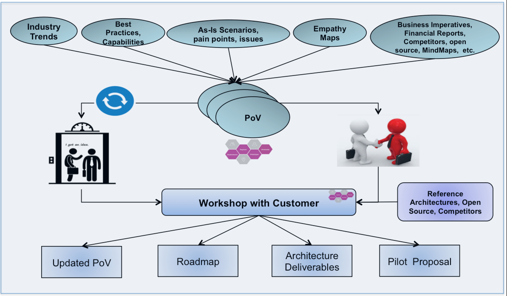

| Guideline: Consultative Technical Selling Via Discovery – PoV – Customer Workshop |
 |
|
| Related Elements |
|---|
Executive Summary This is an introduction to a very successful technical selling approach that focuses on collaborating with the business client to identify one or more compelling business scenarios and associated solution(s). The technique involves incremental commitment by the client through their investment in a set of collaborative activities.  Figure 1: High Level Approach including Discovery, PoV and Workshop Activities This technique logically involves 3 phases as called out in its name: Discovery, PoV, and Customer Workshop. Discovery The Discovery phase involves investment by the IBM Client team to collect as thorough an understanding about the Customer as possible. There are many sources of information and assets available to draw upon, particularly at the Industry or Market Segment level. As part of the guidance for Discovery, a set of Market Segment “MindMaps” are being created and maintained in a TeamSD Guidance Asset Wiki. Each MindMap presents a common structure that organizes the type of information to be gathered (discovered) along with links to assets and repositories that can support the effort. These MindMaps are most prescriptive for the “outside-in” types of knowledge. For the deeper, client specific content, you will need to draw upon the historic IBM-Client relationships owned by various members of the IBM Client team. Discovery focuses on all aspects of the Client that impacts our understanding, from industry trends and challenges, specific business needs and initiatives, business financial and competitive position, organizational drivers and current technical environment. The market segment – persona specific MindMaps are crowd sourced. Thus the Technical Solution Architect not only can refer to one or more specific MindMaps to accelerate and organize your team’s Discovery activity, but you can also update existing MindMaps with valuable links and assets you have discovered and/or create a derivative MindMap that focuses more closely on the “buyer persona” and “market segment” associated with your Client.
The purpose of Discovery is to have the data necessary to formulate a quality set of business scenarios that if
properly addressed through one or more solutions could deliver significant business value to the Client. The assessment
of candidate business scenarios and the packaging of a story to deliver to the Client for validation is the focus of
the PoV phase. The overall objective of the Customer Point of View (PoV) document is to provide a very compelling business-oriented recommendation for customers regarding a specific business problem. The PoV is expected to be a discussion starter and a door opener to pursue further discovery and validation activities with customers. Moreover, the PoV should be used to influence elements of client’s strategy that are related to the area of the PoV, e.g. Retail Industry->Customer Experience. Influencing customer's opinion can be achieved through many channels. One the most effective methods is to provide customers with an innovative vision on how some sections of their business can be transformed by the incorporation of major disrupting forces and technologies to their organizations to produce innovative and exciting user experiences that will lead to better results.
The PoV will be delivered to a targeted [set of] buyers at your client. The business value proposition needs to be
expressed in terms of KPI that are relevant to these buyers. The IBM client team expects that the delivery of the PoV
provides a level of validation from the customer of IBM’s understanding of their critical issues and the potential
value of partnering with IBM to address these issues.
The end goal of a successful PoV is a client that is interested enough in the potential of further collaboration with
IBM that they are willing to invest in a collaborative workshop (Customer Workshop) to identify and prioritize serious
candidate opportunities to pursue. These in turn would be a [potential set of] qualified opportunities. A detailed
approach and technique for building a Customer Point of View is presented in the Whitepaper How to Build a Customer Point of View (PoV).
The expectation post the delivery of the high-level PoV is to engage with the customer in a deeper dive workshop to
work through details outlined in the PoV and translate that into an actionable roadmap. An appropriate Customer
Workshop (e.g. Digital Transformation workshop) is selected based on the domain of the targeted business scenarios.
This workshop provides clients with additional scenarios and details about transformative actions for their business
processes. It also allows the engagement to go to the architectural level to design a solution architecture that will
be friendly to client's ecosystem. For detailed guidance, see Whitepaper: Digital Transformation Workshop. |
| Change Date | Wed Dec 07 11:23:30 IST 2016 |
|---|
© Copyright IBM Corp. 1987, 2016 All Rights Reserved |